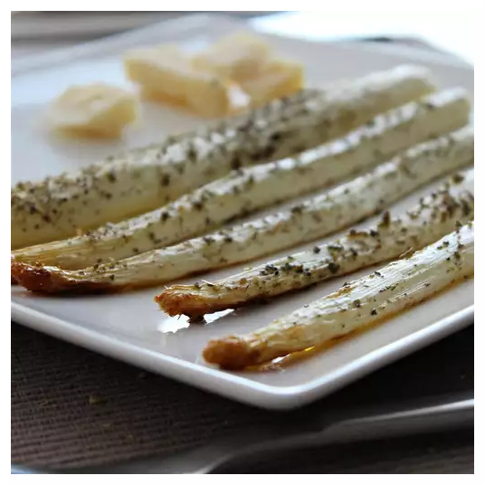

Espárragos blancos asados con hierbas de Provenza

Descripción
Esta receta de espárragos blancos asados es súper sencilla de preparar para
acompañar deliciosamente tu plato francés favorito.
Ingredientes
- 1 manojo de espárragos blancos, pelados y recortados
- 2 cucharadas de aceite de oliva
- 1 ½ cucharaditas de hierbas de Provenza
- ¼ de cucharadita de sal
- ⅛ cucharadita de pimienta negra molida
Pasos
- Precalentar el horno a 400 grados F (200 grados C).
- Coloque los espárragos en una cazuela y úntelos con aceite de oliva.
Espolvorear hierbas de Provenza, sal y pimienta negra sobre los
espárragos.
- Asar en el horno precalentado hasta que estén ligeramente dorados,
unos 20 minutos.
Volver al índice